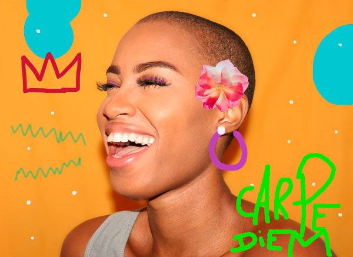
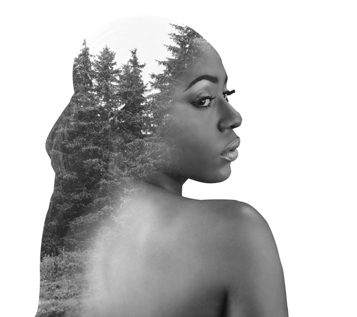
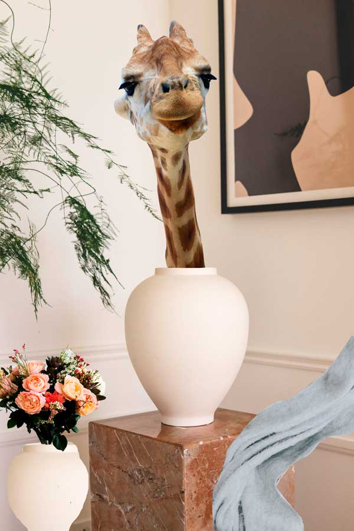
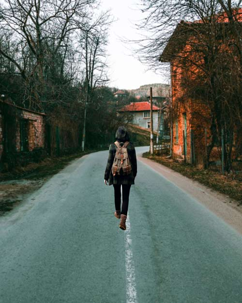

The first image was edited with various types of brushes, colours and sizes. I have also used the clone tool to remove unwanted items and I added a flower, which was previously selected with the pen tool. I added some random designs in the background. However, I wanted to add a crown to imitate Jean-Michel Basquiat paintings and a positive message such as 'Carpe Diem'. Fully edited with Photoshop.
For the second image, I have used two pictures. First, I have selected the model using the pen brush. After, I created an adjustment layer with solid color and I moved the model layer on top. In addition, I dragged the second image and I selected screen blending mode. I added a black and white adjustment and selected high contrast blue filter preset. I moved the trees until I was happy with the result. I also hid the head of the model adding a level adjustment layer. To conclude, I selected the brush tool and removed the trees from the back of the model and her ear. Fully edited with Photoshop.
This image was one of my first experiments with Photoshop as I was getting familiar with the pen selection tool. I used various images and brought them all together in the same picture using different layers. I also used the clone tool to replicate the white vase for the flowers. Fully edited with Photoshop.
I brought two images to Photoshop and I selected the shape of the girl's body with the pen tool. I blended the colors of both images and I blurried the background a bit in comparison with the girl. The first edit had some shapes from the previous image, hence I had to delete the unwanted items. Fully edited with Photoshop.
